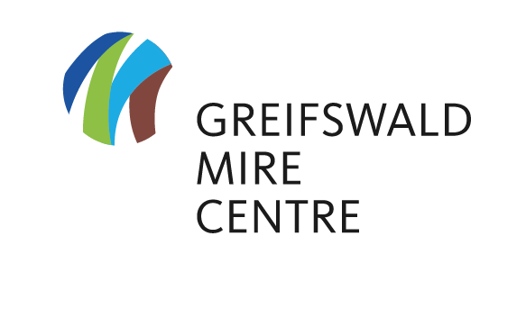
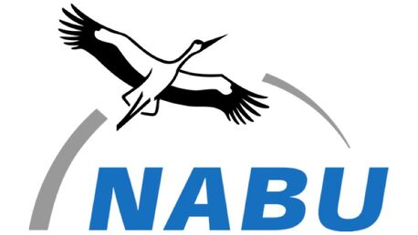
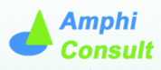
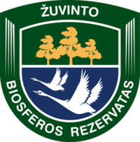
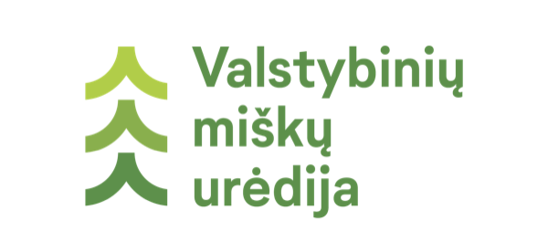
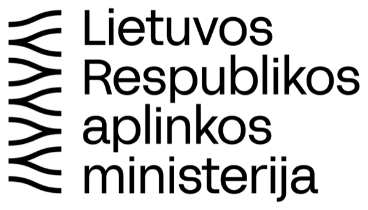
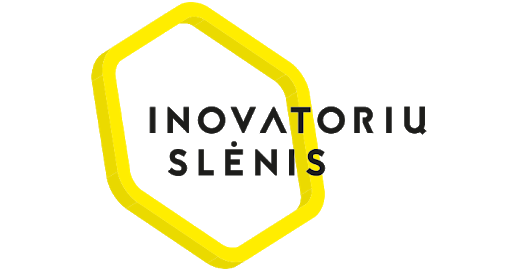
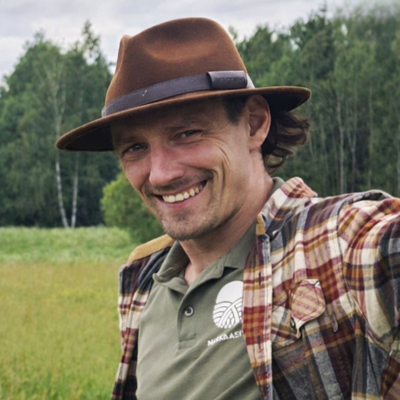

Vykdomas
VykdomasGuodžių durpyno atkūrimas ir apsauga
Atkursime degradavusio durpyno hidrologinį režimą apleisto durpių karjero teritorijoje – kartu su Michaelio Zukovo fondu ir Greifsvaldo pelkių centru.
AtkūrimasSkaityti daugiau

Pelkėms reikia vandens
Beveik trys ketvirtadaliai Lietuvos pelkių sunaikintos arba stipriai pažeistos. Atkuriame jų hidrologinį režimą, saugome biologinę įvairovę, padedame verslui mažinti CO₂ pėdsaką ir mokome visuomenę.
Biržų r. kartu su Michaelio Zukovo fondu atkursime apie 100 ha apleisto durpių karjero teritorijos.
SkaitytiPelkių fondas skaičiais
Šaltiniai: fondo CO₂ programos rodikliai, projektų aprašai ir 2025 m. veiklos ataskaita.
Veiklos kryptys
 01
01
Saugome EB svarbos pelkių buveines ir rūšis – nuo gegužraibių iki varliagyvių.
Daugiau 02
02
Grąžiname vandenį į nusausintas pelkes ir išeksploatuotus durpynus: užtūros, pylimai, kiminų įkurdinimas.
Daugiau 03
03
Padedame įmonėms mažinti anglies pėdsaką investuojant į Lietuvos pelkių atkūrimą.
Verslui 04
04
Klimatui palanki alternatyva sausinimui – ūkininkavimas šlapiuose durpiniuose dirvožemiuose.
DaugiauPažink pelkes
Gyvybinga sausumos ekosistema nuolat įmirkusiuose, drėgmę mėgstančiais augalais apaugusiuose plotuose, kuriuose nuolat vyksta durpėdara – durpių kaupimasis. Pelkėms priskiriami plotai, kuriuose durpių klodas storesnis kaip 30 cm.
Išmok atskirti, kuo aukštapelkė skiriasi nuo žemapelkės, kokios Europos Bendrijos svarbos buveinės susijusios su pelkėmis ir kodėl jas verta atkurti.
Lietuvos ploto dengia pelkės ir durpynai.
buvusių pelkių, šlapių pievų ir pelkinių miškų sunaikinta arba stipriai pažeista.
EB svarbos buveinių tipų Lietuvoje susiję su pelkių ekosistemomis.


Projektai
15 vykdomų ir įgyvendintų projektų Lietuvoje ir Europoje: pelkių atkūrimas, pelkininkystė, klimatas, biologinė įvairovė, švietimas.
VykdomasAtkursime degradavusio durpyno hidrologinį režimą apleisto durpių karjero teritorijoje – kartu su Michaelio Zukovo fondu ir Greifsvaldo pelkių centru.
 Įgyvendintas
ĮgyvendintasTelmologiniame draustinyje įrengtos 197 durpių ir 45 OSB plokščių užtūros bei 3 pylimai (130 m), sulaikantys vandenį sausinimo pažeistoje aukštapelkėje.
 Vykdomas
VykdomasPadedame įveikti kliūtis, trukdančias ES šalims atkurti pelkes: 1 285 ha atkurto ploto leis išvengti 12 496 t CO₂ ekv. emisijų kasmet.

VšĮ „Pelkių fondas“ – pelkėtyros mokslininkų ir pelkių atkūrimo specialistų įkurta organizacija. Mūsų įkvėpėjas – prof. dr. Romas Pakalnis, 2005 m. inicijavęs Aukštumalos aukštapelkės tyrimus ir atkūrimą.Natūralios ir atkurtos pelkių ekosistemos – gamtos ir visuomenės gerovei.

Fondo informacinis filmas apie pelkių atkūrimo reikšmę klimatui ir biologinei įvairovei. Lietuvių kalba; yra versija su subtitrais anglų kalba. © Pelkių atkūrimo ir apsaugos fondas. Visi filmai videotekoje
Naujienos
 Projektai23rugs.
Projektai23rugs.Tarptautinį Guodžių durpyno (Biržų r.) atkūrimo projektą vykdome su Michaelio Zukovo fondu – kartu atkursime apie 100 ha apleisto durpių karjero teritorijos.
 Projektai14birž.
Projektai14birž.Tęsiame pasakojimą apie LIFE ForestHabitatLT gyvųjų laboratorijų atstovų pažintį su Airijos pelkynais, jų apsaugos ir atkūrimo pavyzdžiais.
 Projektai08birž.
Projektai08birž.Lankėme atkuriamas teritorijas Lietuvoje, surengėme mokomąjį vizitą į Airijos pelkynus ir „Mokslo šventę Praviršulio tyrelyje“ Šeduvos gimnazijos mokiniams.
Ir tu gali prisidėti!
Parama, savanorystė ar 1,2 % GPM – kiekvienas indėlis padeda grąžinti vandenį į pelkes.
Vienkartinė ar mėnesinė parama internetu arba pavedimu į sąskaitą LT24 7044 0600 0784 1146 (AB SEB bankas), paskirtis – „Parama“.
Paremti pelkesPrisijunk su kolegomis ar draugais prie mūsų organizuojamų pelkių išsaugojimo veiklų – talkų, ekskursijų ir renginių atkuriamose pelkėse.
Tapti savanoriuPrašymą per EDS sistemą galima pateikti kasmet nuo sausio 1 d. iki gegužės 2 d. – užtenka kelių minučių. Paramos gavėjo kodas:
302822289Verslui: CO₂ emisijų mažinimas
Nusausintų pelkių atkūrimas – neįkainojamas indėlis į jūsų įmonės pastangas mažinti CO₂ emisijas ir prisidėti prie visuomenės gerovės. Mums reikia pelkių – pelkėms reikia jūsų.
Artimiausi renginiai ir talkos Nauja
Talkos, seminarai ir ekskursijos su registracija internetu. Makete renginiai pavyzdiniai – datos ir vietos derinamos su fondu.
Partneriai ir finansuotojai








Michael Succow Foundation Zarasų rajono savivaldybė APVA ES LIFE programa Interreg EUKI Lietuvos gamtos fondas